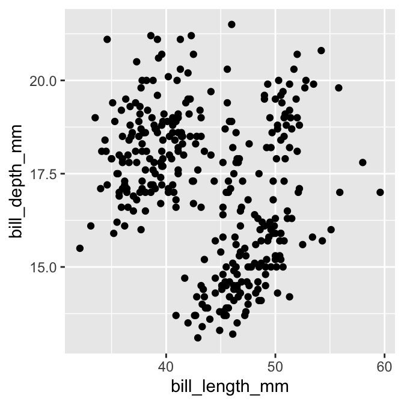
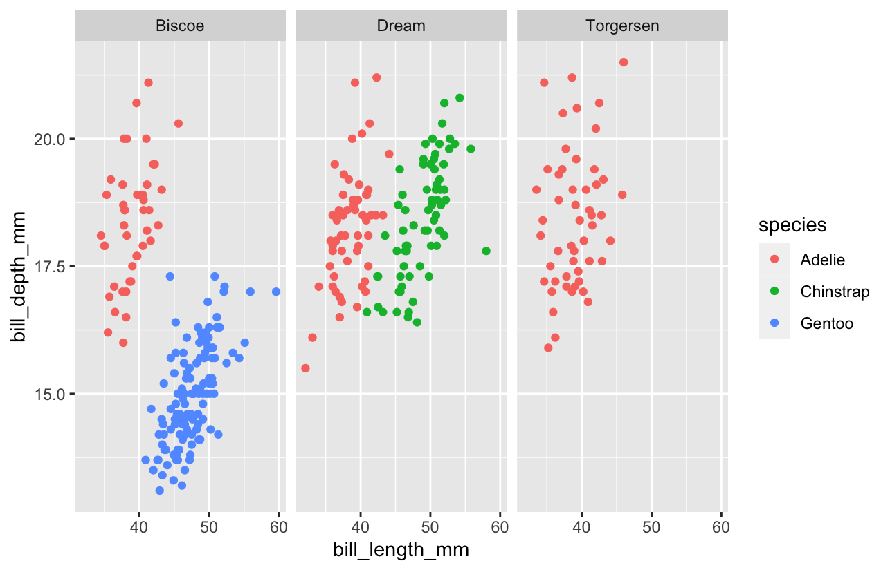
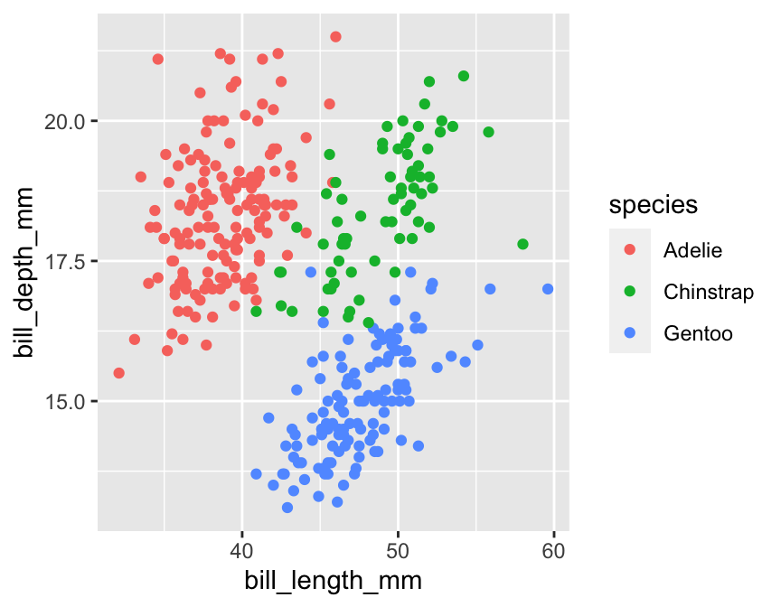

Chapter 13 Introduction to ggplot2
One of the main reasons data analysts turn to R is for its strong data visualisation capabilities. The R ecosystem includes many different packages that support data visualisation. The three most widely used are: 1) the base graphics system, which uses the graphics package; 2) the lattice package; and 3) the ggplot2 package. Each system has its own strengths and weaknesses:
Base graphics is part of base R, which means it’s always available. It’s very flexible and allows us to construct more or less any plot we like. This flexibility comes at a cost, though. While it is certainly easy to get up and running with base R graphics—there are functions like
plotandhistfor making commonly-used figures—building complex figures quickly becomes time-consuming. We have to write a lot of R code to prepare even moderately complex plots, there are many graphical parameters to learn, and many of the standard plotting functions are inconsistent in how they work.Deepayan Sarkar developed the lattice package to implement the ideas of Bill Cleveland in his 1993 book, Visualizing Data. The package implements something called Trellis graphics, a very useful approach for graphical exploratory data analysis. Trellis graphics are designed to help us visualise complicated, multiple variable relationships. The lattice package has many “high level” functions (e.g. 
xyplot) to make this process easy, but still retains much of the fine-grained control that characterises the standard graphics system. The lattice package is very powerful, but it is hard to master.Hadley Wickham developed the ggplot2 package to implement the ideas in a book called The Grammar of Graphics by Wilkinson (2005). It produces Trellis-like graphics but is quite different from lattice in the way it goes about this. It uses its own mini-language to define graphical objects, adopting the language of Wilkinson’s book to define these. It takes a little while to learn the basics, but once these have been mastered it’s very easy to produce sophisticated plots with very little R code. The downside of working with ggplot2 is that it isn’t as flexible as base graphics.
We are not going to survey all these plotting systems. It’s entirely possible to meet most data visualisation needs by becoming proficient with just one of them. This book focuses on ggplot2. In many ways, the ggplot2 package hits the ‘sweet spot’ between standard graphics and lattice. It enables us to produce complex visualisations without the need to write many lines of R code, but is still flexible enough to allow us to tweak the appearance of a figure so that it meets our specific needs.
13.1 The anatomy of ggplot2
The easiest way to learn ggplot2 is by using it. We will do that in a moment. However, before we dive in we need to review the essential features of the ggplot2 ‘grammar’—the rules of how to specify a graph. This grammar is fairly abstract and it probably won’t make sense on first reading. This is fine. Ideas like ‘aesthetics’ and ‘geoms’ will start to make sense as we work through various examples in the next few chapters.
The design of ggplot2 reflect Wilkinson’s grammar of graphics. A complete ggplot2 object is defined by a combination of:
- one or more layers,
- a set of scales (one for each ‘aesthetic mapping’),
- a coordinate system (one per plot),
- a facet specification (if using a multi-panel plot).
The underlying idea is that we construct a visualisation by defining one or more layers. Each layer is associated with some data and a set of rules for how to display the data. Let’s review these components before moving onto the business of actually using ggplot2.
13.1.1 Layers
Each layer in a ggplot2 plot may have five different components, though we don’t necessarily have to specify all of these because most have some kind of default setting or behaviour:
The data. At a minimum, every plot needs some data. Unlike base R graphics, ggplot2 always accepts data in one format, an R data frame (or tibble). Each layer can be associated with its own data set. We don’t have to explicitly add data to each layer. If we choose not to specify the data set for a layer, ggplot2 will use the default data (if defined).
A set of aesthetic mappings. These describe how variables in the data are associated with the aesthetic properties of the layer. Aesthetic properties include things we perceive, such as position, colour, and size of the points. Each layer can be associated with its own unique aesthetic mappings. When we choose not to specify these for a layer ggplot2 will use the defaults (if defined).
A geometric object (a.k.a. ‘geom’). The geom part of layer tells ggplot2 how to actually represent the information—i.e. it refers to the objects we see on a plot, such as points, lines, bars or even text. Each geom only works with a particular subset of aesthetic mappings. We always have to define a geom when specifying a layer.
A statistical transformation (a.k.a. ‘stat’). A stat takes the raw data and transforms it in some way. A stat allows us to plot useful summaries of our raw data. We won’t explicitly make use of them in this book because we prefer to produce summary figures by first processing the data with dplyr. Nonetheless, the stat facility is often doing useful work in the background for some kinds of plots.
A position adjustment. These apply small tweaks to the position of layer elements. These are typically used when we need to define how the information for different categories are separated. For example, when making a bar plot we may need to specify whether bars should be stacked on top of one another (the default) or plotted side-by-side.
13.1.2 Scales
The scale part of a ggplot2 object controls how the information in a variable is mapped to the aesthetic properties. A scale takes the data and converts it into something we can perceive, such as an x/y location, or the colour and size of points in a plot. The two most important things to understand about scales are:
- A scale must be defined for every aesthetic in a plot. It doesn’t make sense to define an aesthetic mapping without a scale because there is no way for ggplot2 to know how to go from the data to the aesthetics without one.
- When we include two or more layers, they all have to use the same scale for any shared aesthetic mappings. This behaviour is necessary to ensure information is displayed consistently.
If we choose not to explicitly define a scale for an aesthetic ggplot2 will use a default. This will often be a ‘sensible’ choice, which means we can get quite a long way with ggplot2 without ever really understanding scales. We will take a brief look at a few of the more common options, though.
13.1.3 Coordinate system
A ggplot2 coordinate system takes the position of objects (e.g. points and lines) and maps them onto the 2d plane that a plot lives on. Most people are already very familiar with the most common coordinate system (even if they didn’t realise it). That’s the Cartesian coordinate system. This is the one we’ve all been using since we first constructed a graph with paper and pencil at school. All the most common statistical plots use this coordinate system so we won’t consider any others in this book.
13.1.4 Faceting
The idea behind faceting is very simple. Faceting allows us to break a data set up into subsets according to the unique values of one or more variables and then produce a separate plot for each subset. The result is a multi-panel plot where each panel shares the same layers, scales, etc. The data is the only thing that varies from panel to panel. The result is a kind of ‘Trellis plot,’ similar to those produced by the lattice package. Faceting is a very powerful tool that allows us to slice up our data in different ways and really understand the relationship between different variables.
13.2 A quick introduction to ggplot2
Now that we’ve briefly reviewed the ggplot2 grammar, we can start learning how to use it. The package uses this grammar as the basis of a sort of mini-language within R. It uses functions to specify components like aesthetics and geoms, which are combined with data to define a ggplot2 graphics object. Once we’ve constructed a suitable object, we can use it to display our graphic on the computer screen or save it using a common graphics format (e.g. PDF, PNG or JPEG).
Rather than orientating this introduction around each of the key functions we’re going to develop a simple example to help us see how ggplot2 works. Many of the key ideas about how ggplot2 works can be taken away from this one example, so it’s worth investing the time to understand it, i.e. use the example to understand how the different ggplot2 functions are related to the grammar outlined above.
Our goal is to produce a simple scatter plot. The scatter plot is one of the most commonly used visualisation tools in the EDA toolbox. A scatter plot uses horizontal and vertical axes (the ‘x’ and ‘y’ axes) to visualise pairs of related observations as a series of points in two dimensions. It’s designed to show how one numeric variable is related to another. We’ll use the penguins data to construct the scatter plot. The questions we want to explore are:
- what is the relationship between bill depth and bill length, and
- does this vary among species and locations (islands)?
13.2.1 Making a start
We can start working ggplot2 by setting up a minimal graphical object to build on. This is what the ggplot function does. We can build an empty object by using ggplot without any arguments:
plt <- ggplot()This constructs the skeleton object and assigns it a name, plt. We can use the summary function to inspect this:
summary(plt)## data: [x]
## faceting: <ggproto object: Class FacetNull, Facet, gg>
## compute_layout: function
## draw_back: function
## draw_front: function
## draw_labels: function
## draw_panels: function
## finish_data: function
## init_scales: function
## map_data: function
## params: list
## setup_data: function
## setup_params: function
## shrink: TRUE
## train_scales: function
## vars: function
## super: <ggproto object: Class FacetNull, Facet, gg>The output of summary is quite verbose, but the important parts are near the top, just before the faceting: part. In this case, the ‘important part’ is basically empty. This tells us that there are no data, aesthetic mapping, layers, etc associated with plt. All we did was set up an empty graphical object.
By the way… it is not necessary to inspect every ggplot2 object with summary. However, it can be instructive to do this when first learning about the package.
ggplot2 vs. ggplot
Notice that the package is called ggplot2, but the actual function that does the work of setting up the graphical object is called ggplot. Try not to mix the names up—this is a common source of errors.
How can we improve on this? We could add a default data set, which we do by passing the name of a data frame or dplyr tibble to ggplot. Let’s try this with penguins:
plt <- ggplot(penguins)
summary(plt)## data: species, island, bill_length_mm, bill_depth_mm,
## flipper_length_mm, body_mass_g, sex, year [344x8]
## faceting: <ggproto object: Class FacetNull, Facet, gg>
## compute_layout: function
## draw_back: function
## draw_front: function
## draw_labels: function
## draw_panels: function
## finish_data: function
## init_scales: function
## map_data: function
## params: list
## setup_data: function
## setup_params: function
## shrink: TRUE
## train_scales: function
## vars: function
## super: <ggproto object: Class FacetNull, Facet, gg>Notice that when we summarise the resulting object this time, we see that the variables inside penguins (species, island, bill_length_mm, …) now comprise the data associated with the plt object.
The next step is to add a default aesthetic mapping to the graphical object. Remember, this describe how variables in the data are mapped to the aesthetic properties of the layer(s).
One way to think about aesthetic mappings is that they define what kind of relationships the plot will describe. Since we’re making a scatter plot, we need to define mappings for positions on the ‘x’ and ‘y’ axes. We want to investigate how bill depth depends on bill length, so we need to associatebill_length_mm with the x position and bill_depth_mm with the y position.
We define an aesthetic mapping with the aes function. One way to use aes is like this:
plt <- plt + aes(x = bill_length_mm, y = bill_depth_mm)This little snippet of R code looks odd at first glance. There are a couple of things to take away from this:
- We can ‘add’ the aesthetic mapping to the
pltobject using the+operator. This has nothing to do with arithmetic. The ggplot2 package uses some clever programming tricks to redefine the way+works so that it can be used to combine graphical objects. It takes a bit of getting used to but this is useful because it makes building a plot from the components of the grammar very natural. - The second thing to notice is that an aesthetic mapping is defined by one or more name-value pairs, specified as arguments of
aes. The names on the left-hand side of each=refer to the properties of our graphical object (e.g. the ‘x’ and ‘y’ positions). The values on right-hand side refer to variable names in the data we want to associate with these properties.
Notice that we overwrote the original plt object with the updated version using the assignment operator. We could have created a distinct object, but there’s usually no need to do this.
Once again, we can inspect the result using summary:
summary(plt)## data: species, island, bill_length_mm, bill_depth_mm,
## flipper_length_mm, body_mass_g, sex, year [344x8]
## mapping: x = ~bill_length_mm, y = ~bill_depth_mm
## faceting: <ggproto object: Class FacetNull, Facet, gg>
## compute_layout: function
## draw_back: function
## draw_front: function
## draw_labels: function
## draw_panels: function
## finish_data: function
## init_scales: function
## map_data: function
## params: list
## setup_data: function
## setup_params: function
## shrink: TRUE
## train_scales: function
## vars: function
## super: <ggproto object: Class FacetNull, Facet, gg>The data (data:) from the original plt are still there, but now we can also see that two default mappings (mapping:) have been defined for the x and y axis positions. We have successfully used the ggplot and aes functions to set up a graphical object with both default data and aesthetic mappings. Any layers that we now add will use these unless we choose to override them by specifying different options.
We now need to specify a layer that will tell ggplot2 how to visualise the data. Remember, each layer has five different components: data, aesthetic mappings, a geom, a stat and a position adjustment. Since we have already set up the default data and aesthetic mappings, there’s no need to define these again—ggplot2 will use the defaults if we leave them out of the layer definition. This leaves the geom, stat and position adjustment.
What kind of geom do we need? A scatter plot allows us to explore a relationship as a series of points. That means we need to add a layer that uses the ‘point’ geom. Simple.
What about the stat and position? Not so simple. These are difficult to explain without drilling down into the details of how ggplot2 works. The important insight is that both the stat and the position adjustment change the data in some way before plotting it. If we want to avoid having ggplot2 do anything to other data, the keyword is ‘identity.’ We use this value whenever we want ggplot2 to plot our data without modification.
We will examine the easy way to add a layer in a moment. However, we’ll use the long-winded approach first because this reveals what happens whenever we build a ggplot2 object. The general function for adding a layer is simply called layer. Here’s how it works in its most basic usage:
plt <- plt + layer(geom = "point", stat = "identity", position = "identity")This adds a layer to the existing plt object with the layer function and overwrites the old version. Again, we add the new component using the + symbol. We set three arguments of the layer function:
- define the geom: the name of this argument was
geomand the value assigned to it was"point". - define the stat: the name of this argument was
statand the value assigned to it was"identity". - define the position adjustment : the name of this argument was
positionand the value assigned to it was"identity".
Let’s review the structure of the resulting graphical object one last time to see what we’ve achieved:
summary(plt)## data: species, island, bill_length_mm, bill_depth_mm,
## flipper_length_mm, body_mass_g, sex, year [344x8]
## mapping: x = ~bill_length_mm, y = ~bill_depth_mm
## faceting: <ggproto object: Class FacetNull, Facet, gg>
## compute_layout: function
## draw_back: function
## draw_front: function
## draw_labels: function
## draw_panels: function
## finish_data: function
## init_scales: function
## map_data: function
## params: list
## setup_data: function
## setup_params: function
## shrink: TRUE
## train_scales: function
## vars: function
## super: <ggproto object: Class FacetNull, Facet, gg>
## -----------------------------------
## geom_point: na.rm = FALSE
## stat_identity: na.rm = FALSE
## position_identityThe text above the ----- line is the same as before. It summarises the default data and the aesthetic mapping. The text below it summarises the layer we just added. It tells us that this layer will use the points geom (geom_point), the identity stat (stat_identity), and the identity position adjustment (position_identity).
Now plt has everything it needs to render a figure. How do we do this? Simply ‘print’ the object:
print(plt)## Warning: Removed 2 rows containing missing values (geom_point).
That’s it! We have produced a scatter plot showing how bill depth depends on bill length. Here’s a quick summary of what we did, all in one place with comments:
# step 1. set up the skeleton object with a default data set
plt <- ggplot(penguins)
# step 2. add the default aesthetic mappings
plt <- plt + aes(x = bill_length_mm, y = bill_depth_mm)
# step 3. specify the layer we want to use
plt <- plt + layer(geom = "point", stat = "identity", position = "identity")
# step 4. render the plot
print(plt)Don’t use this workflow!
It’s possible to construct any ggplot2 visualisation using the workflow outlined in this subsection, but this is not the recommended approach. The workflow we adopted here was used to reveal how the grammar works, rather than for its efficiency. A more concise, standard approach to using ggplot2 is outlined next. Use that for real-world analysis.
13.2.2 A standard way of using ggplot2
The ggplot2 package is quite flexible, which means we can specify a visualisation in more than one way. To keep life simple, we’re going to adopt a consistent workflow from now on. This won’t reveal the full array of ggplot2 tricks, but it is sufficient to construct a wide range of standard visualisations. To see it in action, we’ll make the same bill depth vs. bill length scatter plot again.
We began building our ggplot2 object by setting up a skeleton object with a default data set and then added the default aesthetic mappings. There is a more concise way to achieve the same result:
plt <- ggplot(penguins, aes(x = bill_length_mm, y = bill_depth_mm))
summary(plt)## data: species, island, bill_length_mm, bill_depth_mm,
## flipper_length_mm, body_mass_g, sex, year [344x8]
## mapping: x = ~bill_length_mm, y = ~bill_depth_mm
## faceting: <ggproto object: Class FacetNull, Facet, gg>
## compute_layout: function
## draw_back: function
## draw_front: function
## draw_labels: function
## draw_panels: function
## finish_data: function
## init_scales: function
## map_data: function
## params: list
## setup_data: function
## setup_params: function
## shrink: TRUE
## train_scales: function
## vars: function
## super: <ggproto object: Class FacetNull, Facet, gg>In this form, the aes function appears inside ggplot as a second argument. This sets up a graphical object with default data and aesthetic mappings in a single step. We will always use this approach from now on.
The next step adds a layer. We saw that the layer function can be used to construct one from its component parts. However, ggplot2 provides many convenience functions that construct layers according to the type of geom they need.
They all look like this: geom_TYPE, where TYPE stands for the name of the geom we want to use. For example, a point geom is specified using geom_point. Using this function, an alternative to the last line of the example is therefore:
plt <- plt + geom_point()We didn’t have to specify the stat or the position adjustment components of the layer because the geom_TYPE functions all use reasonable defaults. These can be overridden if needed, but most of the time, there’s no need to do this. This way of defining a layer is much simpler and less error-prone than the manual layer method. We will always use the geom_TYPE method from now on.
There’s one last trick we need to learn to use ggplot2 efficiently. We’ve been building a plot object in several steps, giving the intermediates the name plt, and then manually printing the object to display it when it’s ready. This is useful if we want to make different versions of the same plot. However, we very often just want to build the plot and display it in one go. This is done by combining everything with + and printing the resulting object directly:
ggplot(penguins, aes(x = bill_length_mm, y = bill_depth_mm)) + geom_point()## Warning: Removed 2 rows containing missing values (geom_point).
That code builds the ggplot2 graphical object and renders it in one go. Notice that we didn’t even have to use print to generate the output. We have seen a lot is going on underneath this, but this small snippet of R code contains everything ggplot2 needs to construct and display a simple scatter plot.
One last thing… The code for ggplot2 can get quite complicated, and as always, it’s a good idea to use newlines and white space to improve readability. The usual convention is to put each new function after a + on a new line, like this:
ggplot(penguins, aes(x = bill_length_mm, y = bill_depth_mm)) +
geom_point()Just remember that all the ggplot code joined by + symbols has to be run as one—it all belongs together even if we decide to place the component parts on different lines.
What does this scatter plot actually tell us about penguin bill morphology? It seems to suggest there isn’t much of a relationship between bill depth and bill length. Does that seem sensible? Maybe we need a more informative plot…
13.3 Increasing the information density
We introduced the example by saying that we were interested in the relationship between bill depth and bill length, and how this might vary among species and islands. So far, we’ve only examined the bill depth-length part. We’ll finish this chapter by investigating how this relationship depends on the remaining two variables (species and island). In doing so, we’ll highlight approaches for increasing the amount of information in a visualisation—that’s the real goal of this section.
13.3.1 Using additional aesthetics
How might we learn whether the bill depth-length relationship varies by penguin species? We need to include information in the species variable in our scatter plot somehow. There are different ways to do this, but the basic trick is to map the species variable to a new aesthetic.
One option is to map the species to colour so that the colour of the points correspond to different species. We achive this by changing the aes part:
ggplot(penguins,
aes(x = bill_length_mm, y = bill_depth_mm, colour = species)) +
geom_point()## Warning: Removed 2 rows containing missing values (geom_point).
Individual points are now coloured according to species identity. ggplot2 also adds a legend to the figure—a colour scale is not much use without a legend. We can see that bill morphology is reasonably species-specific. Separating things by species suggests a (mild) positive association between bill length and bill depth within species. We couldn’t see this before because it was hidden by the among species pattern.
Notice that we put the aes argument on a new line. We did this because that first line was getting a bit long. This is just a readability thing—the aes part still belongs to ggplot.
We could certainly improve this visualisation. Nonetheless, it illustrates an important concept: we can easily add more information to a plot by mapping additional variables to new aesthetics. There is nothing to stop us using different aesthetics if we wanted to squeeze even more information into this plot. For example, we could map the sex variable (sex) to the point shape using shape = sex inside aes. That would allow us to see if the relationship differs by sex within and among species.
13.3.2 Using facets
What if we want to see how the bill morphology varies across islands? One way to do this is to make a separate scatter plot for each island. The good news is we don’t have to do this manually. We can use the faceting facility of ggplot2 instead. Faceting allows us to define subsets of data according to the values of one or more variables and produce a separate plot for each subset, all without having to write much R code.
Faceting operates on the whole figure, which means we can’t apply it by changing the properties of a layer. Instead, we have to use a new function to add the faceting information. There are two different ways to facet in ggplot2:
facet_wrapforms a matrix of panels by wrapping the 1d sequence of panels into a 2d matrix with rows and columns. It is typically used with a single categorical faceting variable (though it works with two or more faceting variables).facet_gridforms a 2d matrix of panels defined by row and column variables. It is typically used when we have two or more categorical variables, and all combinations of the variables exist in the data.
This is best understood by example. Here’s how we split things up by island using the facet_wrap function:
ggplot(penguins,
aes(x = bill_length_mm, y = bill_depth_mm, colour = species)) +
geom_point() +
facet_wrap(vars(island))## Warning: Removed 2 rows containing missing values (geom_point).
The first argument of facet_wrap (~ island) says to split up the data set according to the values of island. Notice that the panels share the same scales for the ‘x’ and ‘y’ axes. This makes it easy to compare information.
The plot indicates that bill morphology is roughly invariant across the three islands. It also inadvertently reveals something else about these penguins—the Gentoo and Chinstrap species are only found on a single island, which is different for each one, whereas Adelie penguins are found on all three islands. That’s one reason exploratory analysis is so important—it throws up unexpected findings.
Don’t forget the vars part
We have to wrap the name of the faceting variable with the vars function in the facet_wrap specification. Trust us, facet_wrap won’t work without it.